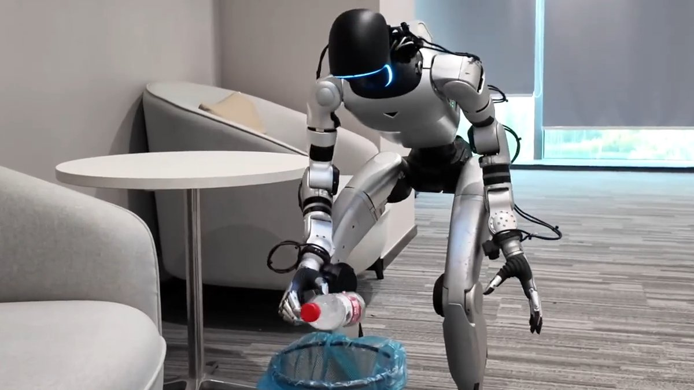
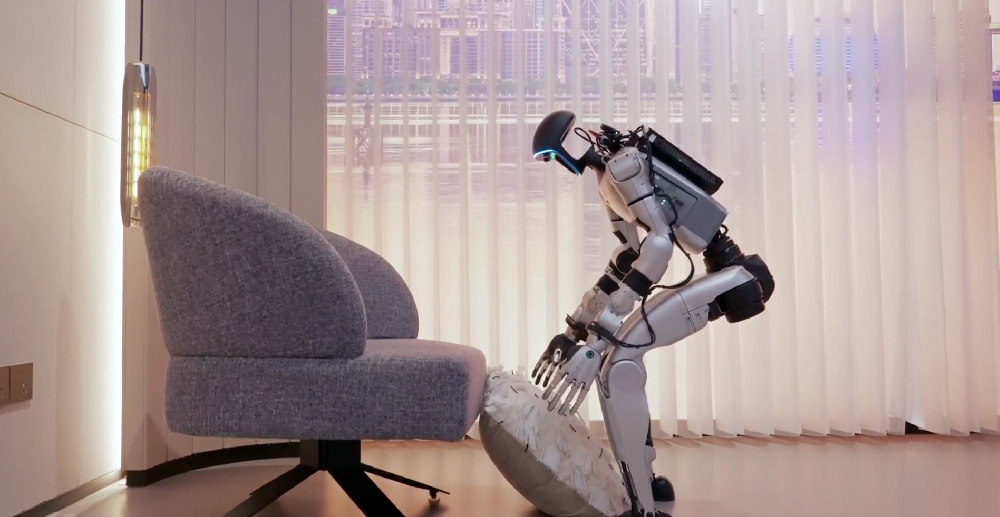
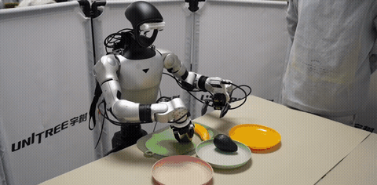

Unitree Robotics
28 models
13 quadrupeds · 10 humanoids · 3 robot AI models · 2 robot hands
13 quadrupeds
Year, newest first


10 humanoids
Year, newest first


3 robot AI models
Year, newest first



2 robot hands
Year, newest first


Card photos are the manufacturers’ own.
Is a robot or model from Unitree Robotics missing? Tell us
Related: Turing Tree, a directory of the people and organisations shaping AI.